- Acesso
- Municípios
- Cargos
- Usuários — a publicar
- Declarações — a publicar
O acesso ao painel da concessionária é exclusivo por certificado digital A1 ou A3, ICP-Brasil. O CPF ou CNPJ do certificado deve coincidir com o documento de um usuário cadastrado e ativo da concessionária.
O certificado de autenticação do usuário é distinto do certificado de assinatura do arquivo. A assinatura do .p7s exige e-CNPJ da concessionária, idêntico ao CNPJ_DISTRIBUIDORA do registro 0000. Autenticação com e-CPF não substitui essa exigência.
A entrada do sistema é a tela Acessar sistema. Ela admite e-mail e senha para os demais contextos e, para a concessionária, o atalho Acesso Concessionária.
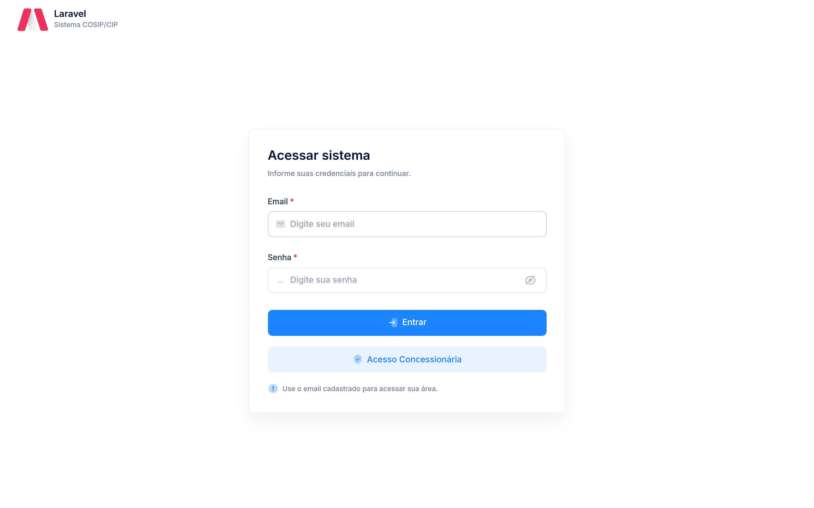
O atalho Acesso Concessionária abre o cartão Acesso da concessionária, com o botão Entrar com certificado digital e as orientações sobre a escolha do certificado no navegador.
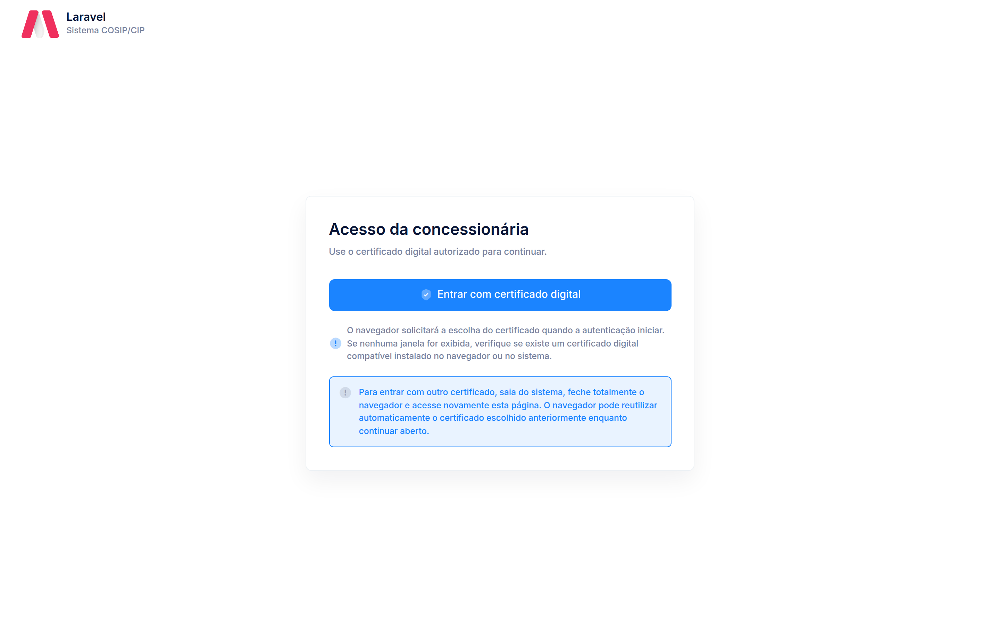
O navegador solicita a escolha do certificado no início da autenticação. Se a janela não for exibida, não há certificado compatível instalado no navegador ou no sistema. Para trocar de certificado, é necessário sair, fechar totalmente o navegador e reabrir a página: o navegador pode reutilizar o certificado já escolhido enquanto permanecer aberto.
Quando o certificado é apresentado ao host de autenticação, o sistema identifica o documento e, se o usuário estiver cadastrado e ativo, concede o acesso ao painel. Se a sessão anterior tiver sido encerrada no mesmo navegador, a tela permanece visível com o certificado detectado, para nova autenticação pelo mesmo botão.
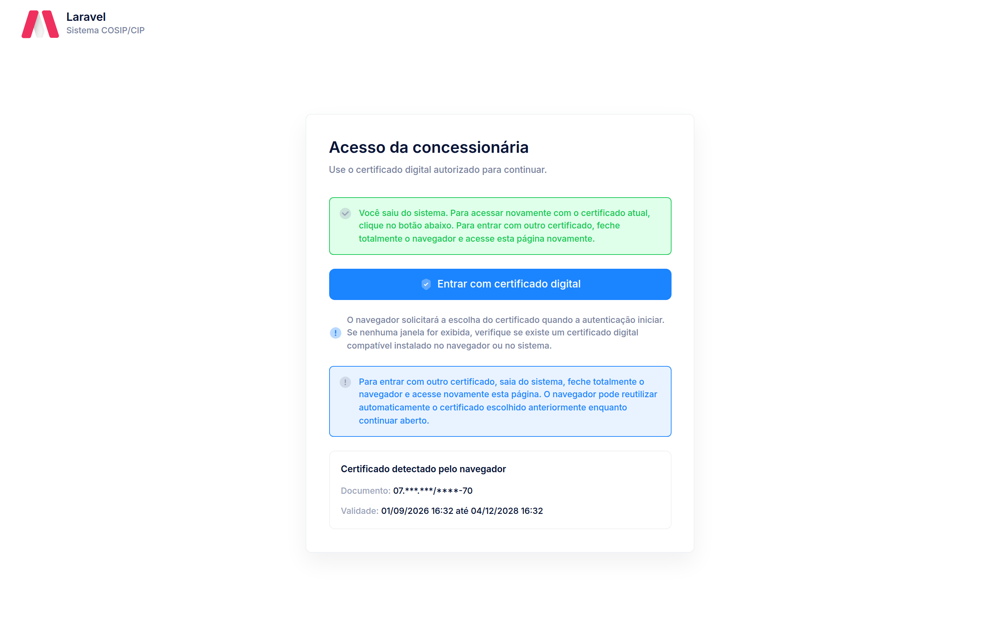
Se nenhum certificado for apresentado, o acesso é recusado e a recusa é exibida na própria tela.
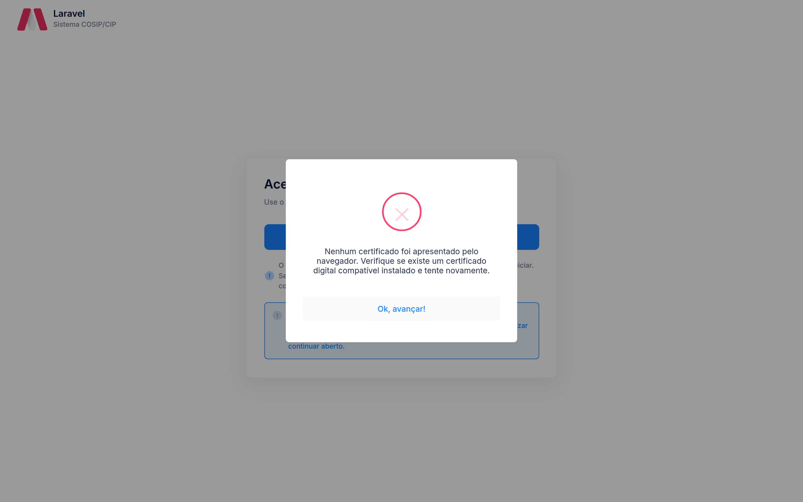
| Condição | Efeito |
|---|---|
| Certificado não apresentado | Acesso recusado |
| Certificado não validado ou fora da validade | Acesso recusado |
| CPF/CNPJ inexistente no cadastro da concessionária | Acesso recusado |
| Usuário inativo | Acesso recusado |
| Usuário sem contexto de concessionária | Acesso recusado |
O aceite identifica a concessionária no cabeçalho e abre o painel. O menu à esquerda reúne os módulos operacionais:
- Dashboard — tela inicial após o acesso;
- Municípios — vínculos da concessionária com os municípios;
- Declarações — UCS, Extrato COSIP/CIP, Extrato IP e Conciliação Financeira;
- Cargos e Usuários — usuários e cargos da concessionária.
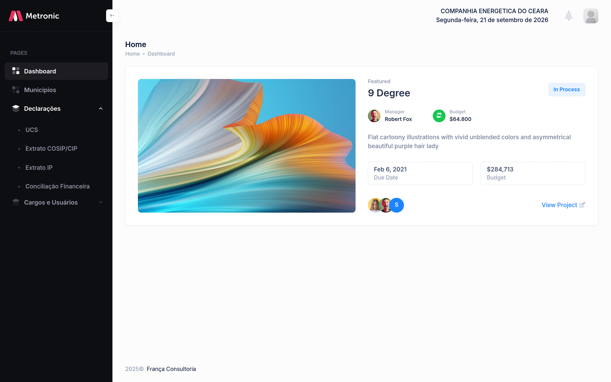
O sino do cabeçalho concentra as notificações do sistema. O ícone de usuário abre o menu da sessão.
O encerramento ocorre pela opção Sair no menu do usuário. O sistema retorna à tela de acesso da concessionária. Se o navegador permanecer aberto, o certificado anterior pode ser reapresentado automaticamente (Figura 3).
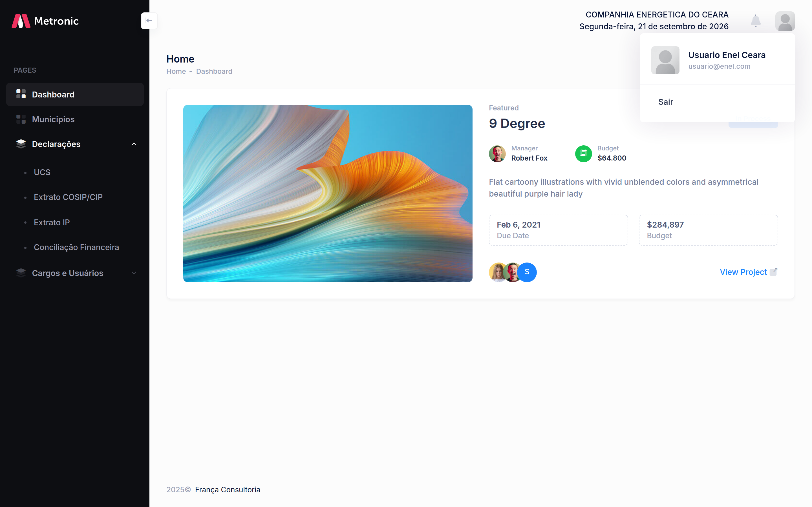
O módulo Municípios apresenta os vínculos da concessionária com os municípios. Não há cadastro, alteração nem exclusão neste painel: a tela serve para a concessionária identificar quais municípios integram o seu recorte e em que situação está cada vínculo, antes de gerar a declaração.
A listagem exibe o município (razão social do cliente), o status do vínculo, a data de criação e a consulta. Filtros por nome e por situação (Ativa, Inativa, Suspensa, Cancelada) recortam a mesma relação.
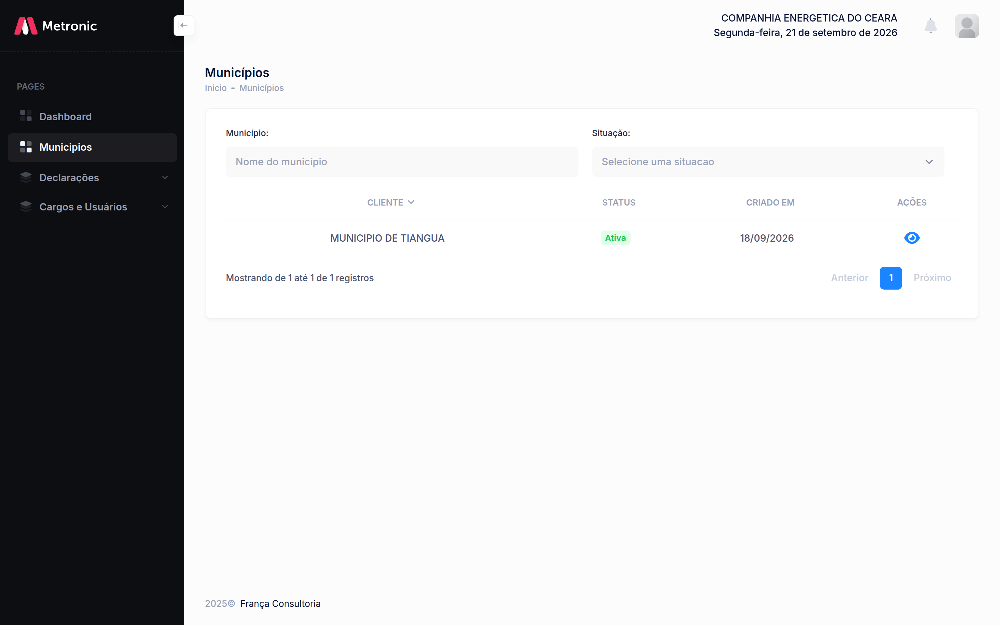
A consulta apresenta o status, as datas do vínculo e a identificação do município (razão social, CNPJ e endereço). O conteúdo é informativo; o vínculo não se altera nesta tela.
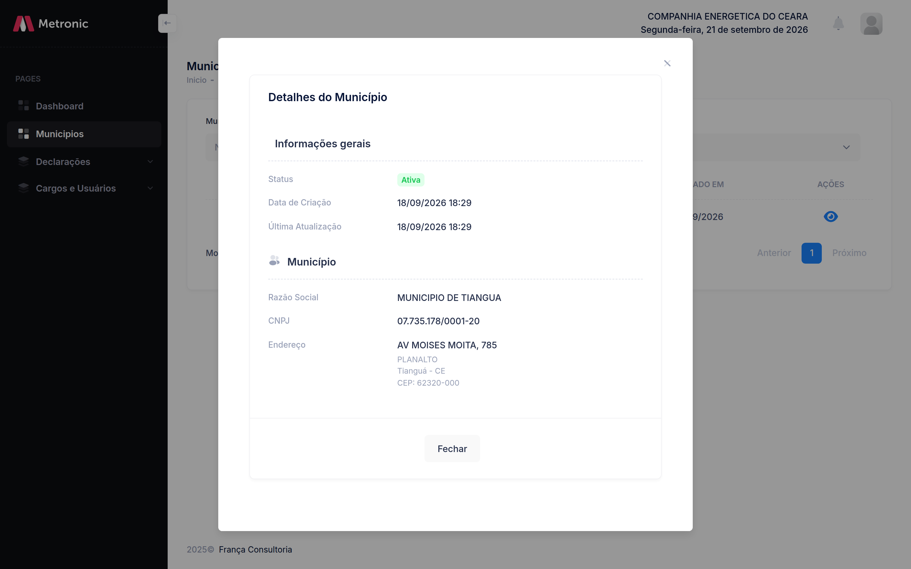
O arquivo deve conter apenas municípios com vínculo ativo. Vínculo inativo, suspenso ou cancelado não admite bloco 0100 (MUN-11). Município sem fato gerador na competência é omitido; não existe registro de município sem movimento (EST-04).
A regra de conteúdo do arquivo está no Manual da Concessionária, seção 2.2.
O cargo define o que o usuário da concessionária pode consultar e operar no painel. O sistema entrega um cargo padrão, imutável. A concessionária cria os demais cargos, escolhe as permissões e os atribui aos seus usuários.
A listagem reúne o cargo padrão e os cargos criados pela própria concessionária. Filtro por nome recorta a relação. O cargo padrão exibe apenas consulta; os cargos da concessionária exibem consulta, alteração e exclusão.
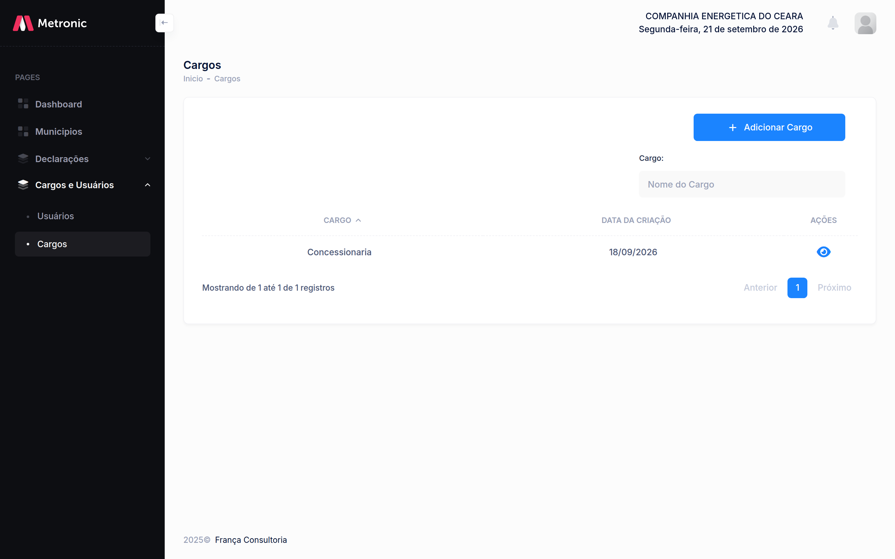
O cargo Concessionaria é criado pelo sistema. Não admite alteração de nome, de permissões nem exclusão: na listagem aparece somente a consulta. Ele reúne as capacidades do contexto da concessionária (dashboard, municípios, declarações e gestão de usuários e cargos).
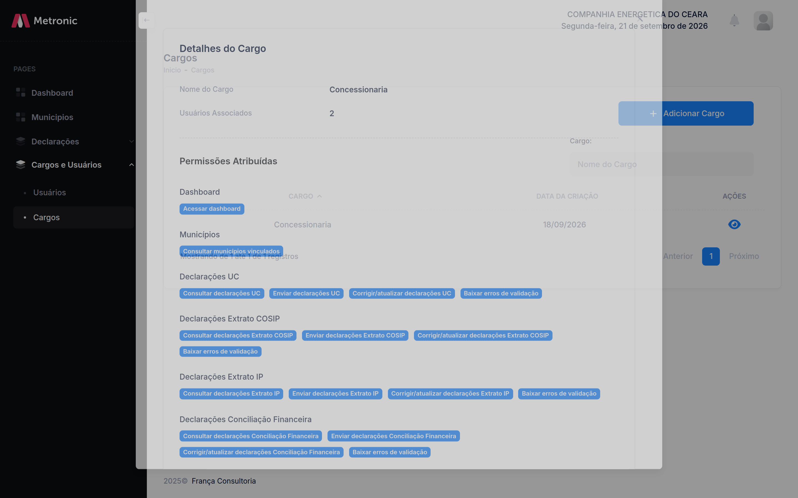
O cadastro exige nome e ao menos uma permissão. O nome não pode coincidir com outro cargo do mesmo contexto, inclusive o padrão. As permissões vêm agrupadas por módulo; cada grupo admite seleção total ou item a item. Há também seleção geral de todas as permissões.
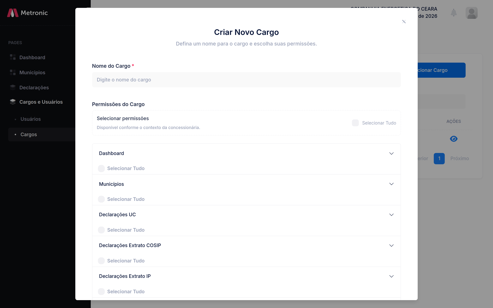
| Grupo | Capacidades |
|---|---|
| Dashboard | Acessar dashboard |
| Municípios | Consultar municípios vinculados |
| Declarações UC | Consultar, enviar, corrigir/atualizar, baixar erros de validação |
| Declarações Extrato COSIP | Consultar, enviar, corrigir/atualizar, baixar erros de validação |
| Declarações Extrato IP | Consultar, enviar, corrigir/atualizar, baixar erros de validação |
| Declarações Conciliação Financeira | Consultar, enviar, corrigir/atualizar, baixar erros de validação |
| Usuários e Cargos | Consultar ou gerenciar usuários; consultar ou gerenciar cargos |
Somente o cargo criado pela concessionária admite alteração e exclusão. A alteração reedita nome e permissões, com as mesmas exigências do cadastro. A exclusão é recusada enquanto houver usuário associado: é necessário retirar o cargo dos usuários antes.
| Condição | Efeito |
|---|---|
| Cargo padrão (Concessionaria) | Somente consulta |
| Cargo da concessionária, sem usuários | Consulta, alteração e exclusão |
| Cargo da concessionária, com usuários associados | Exclusão recusada até remover a associação |
| Nome já existente no contexto | Cadastro ou alteração recusados |
| Nenhuma permissão selecionada | Cadastro ou alteração recusados |
A atribuição ocorre no módulo Usuários, no cadastro ou na alteração do usuário. Pelo menos um cargo é obrigatório. Os cargos disponíveis são o padrão e os criados pela concessionária. A inclusão de novos usuários no painel cabe ao usuário principal da concessionária.